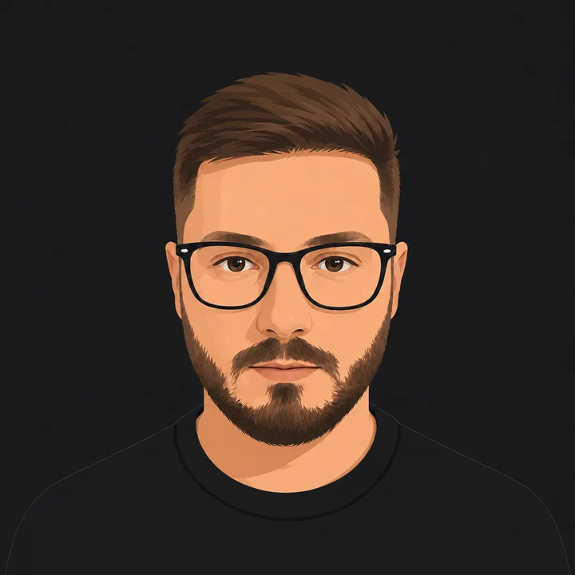

Bravo nel tuo mestiere, invisibile online.
C'è chi cucina benissimo, chi cura i pazienti meglio di tutti, chi ha il negozio più fornito della zona. E su internet non se ne accorge nessuno. Del digitale me ne occupo io: sito, Google, social, pubblicità. Tu continui a fare quello che sai fare.

Come porto più clienti alla tua attività.
Un sito fatto bene, le parole giuste per convincere, la pubblicità per farti trovare e i numeri sotto controllo. Quattro pezzi che portano clienti solo se lavorano insieme.
Darti un sito fatto bene
Un sito vetrina di alta qualità, veloce e curato, che fa subito una buona impressione e spinge chi lo apre a chiamarti, scriverti o prenotare. Niente template tristi uguali a mille altri.
Farti scegliere
Le parole giuste sul sito, nelle email e negli annunci, perché chi ti trova scelga te invece di chiudere la pagina e cercare un altro. Anni passati a scrivere testi che vendono, sul mercato italiano.
Farti trovare
Pubblicità su Google e sui social che ti porta richieste, prenotazioni e clienti, senza buttare soldi. Tengo le spese sotto controllo e punto al ritorno.
Capire cosa funziona
Ti dico con parole semplici cosa ti sta portando clienti e cosa ti sta solo costando, così sai dove investire e dove smettere di buttare soldi. Niente più decisioni a naso.
Dietro le quinte uso gli strumenti professionali del mestiere (Meta Ads, Google Ads, GA4, tag server-side) per misurare ogni euro che spendi.
Il tuo lavoro lo sai fare meglio di chiunque. Quello che spesso manca è farti trovare e farti scegliere da chi, proprio adesso, sta cercando online quello che offri, mentre tu pensi al resto. Quel pezzo lo metto io.
I clienti non arrivano da soli: arrivano quando chi ha bisogno di te ti trova su Google o sui social, capisce in pochi secondi perché vali e chiama te invece di un altro. È lì che lavoro.
Vuoi sistemare anche tu la parte online?
ParliamoneDietro c'è una persona sola: io.
Sono Mattia. Vengo dalla fisioterapia e dal 2020 lavoro nel marketing e nell'online, un po' per curiosità, un po' perché mi piace smontare i problemi finché non trovo la soluzione.
Mi occupo soprattutto di marketing a risposta diretta e copywriting, cioè di far arrivare il messaggio giusto alle persone giuste e portarle ad agire. Per anni ho gestito un'importante società che del marketing aveva fatto la sua ragione d'essere, e oggi quel mestiere lo metto al servizio delle attività che vogliono crescere online.
Non mi spaccio per un guru e non ti prometto la luna. Faccio una cosa e la faccio bene: ti tolgo il peso del digitale dalle spalle e lo trasformo in clienti. Gli strumenti per crescere oggi ci sono tutti, spesso manca solo qualcuno che li sappia usare al posto tuo mentre tu mandi avanti il lavoro.
Lavoro con poche attività per volta, parli sempre con me, e ti dico le cose come stanno, anche quando ti conviene non spendere.
Pochi clienti, seguiti bene.
Guardo i risultati
Le scelte nascono da quello che funziona davvero. Se una cosa non rende, la cambio.
Niente fuffa
Ti dico chiaro cosa può funzionare e cosa no. Meglio perdere un lavoro che promettere il falso.
Tutto collegato
Sito, pubblicità e contenuti lavorano insieme, così ogni pezzo aiuta gli altri a portarti clienti.
Ti tolgo il pensiero
Me ne occupo io e ti aggiorno con parole semplici. Tu continui a mandare avanti la tua attività.
Idee pratiche per la tua attività.
Spiego in parole semplici come farti trovare online e ottenere più clienti. Senza giri di parole tecniche.
Come farti trovare su Google quando un cliente cerca nella tua zona
14 mag 2026Quanto conviene investire in pubblicità per partire
30 apr 2026Perché a volte la pubblicità non porta subito risultati
16 apr 2026Sito o pagina Facebook: da dove conviene partire
2 apr 2026Le tre cose da sistemare prima di spendere in pubblicità
Vuoi far crescere la tua attività online?
Scrivimi due righe sulla tua attività e su cosa vorresti migliorare. Ci sentiamo per una breve chiamata senza impegno e capiamo insieme se posso esserti utile: se vedo che posso darti una mano te lo dico, se non è il caso te lo dico lo stesso. Nessuna telefonata insistente per venderti qualcosa.
info@mattiadambrosio.com